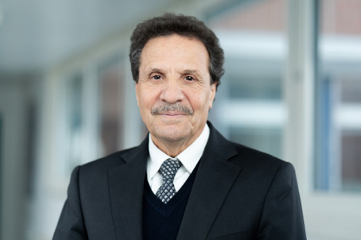

Honorary Member, Kiel University of Applied Sciences. Pioneering sustainable functional coatings that protect surfaces and enable clean energy — from antibiofouling surfaces to electrocatalytic thin films for green hydrogen production.

Prof. Mohammed Es-Souni is an Honorary Member of Kiel University of Applied Sciences and founder of IMST — Institut für Werkstoff- und Oberflächentechnologie. Over 35 years, his research has consistently delivered functional coating technologies that solve real-world problems in medicine, industry, and energy.
His work centres on two commercially impactful pillars: release-free antibiofouling and scratch-resistant coatings for medical devices, contact lenses, implants, and industrial surfaces; and electrocatalytic thin-film coatings for green hydrogen production alongside nanostructured electrochemical energy storage systems.
All coating technologies are developed using environmentally sustainable methods — photografting, sol-gel deposition, and electrochemical processing — enabling scale-up from laboratory to industrial production without hazardous processing routes.
His research has been funded by the DFG, German Federal Ministries, and the European Union, with a cumulative portfolio exceeding €15 million. Five technology transfer awards recognise the consistent translation of research into industrial value.
Release-free, durable anti-adhesive coatings that resist protein adsorption, bacterial colonisation, and mechanical wear — without biocides or leachable agents. Engineered for medical, optical, and industrial applications.
UV-initiated photografting of PEG, pSBMA, and related antifouling polymer chains directly onto substrate surfaces including porous alumina, metals, and polymers. Chemically anchored brushes resist protein adsorption and bacterial adhesion without releasing agents.
Pore walls of anodized alumina and other porous oxide supports are functionalized with photografted antifouling brushes. This architecture combines mechanical robustness of the oxide scaffold with the antifouling chemistry of the brush — enabling scratch-resistant, non-fouling surfaces.
Inorganic-organic hybrid coatings combining metal oxide nanoparticles (TiO₂, SiO₂, Al₂O₃) with photografted antifouling polymer matrices. The hard oxide phase provides mechanical reinforcement and scratch resistance while the polymer brush imparts protein repellency — a superior architecture to purely organic multilayer systems.
Thin-film electrocatalysts and nanostructured electrode coatings engineered for the hydrogen evolution reaction (HER) — maximising activity and durability while minimising precious metal loading. Sustainable, scalable, and validated in leading journals.
Thin films of titanium nitride (TiN) with engineered oxygen defects act as robust, cost-effective HER electrocatalysts with outstanding performance. The defect engineering strategy tunes electronic structure and active site density without relying on platinum-group metals. Validated in Nanomaterials 2024.
Au-nanorod arrays used as high-surface-area supports for Pd and Pt nanocatalysts deposited at ultra-low loading. Systematic study (Nanomaterials 2023) demonstrated Pd outperforms Pt mass-for-mass on Au-NR supports — directly informing cost-reduction strategies for green hydrogen electrolysers.
Template-derived porous PtPd alloy nanotubes on substrate surfaces combine maximised active surface area with minimal Pt content. Demonstrated high-performance HER electrocatalysis with low Pt loading (Catalysis Science & Technology 2019) — a viable path to affordable water-splitting electrodes.
Publications focused on antibiofouling surfaces and electrocatalytic coatings for hydrogen production, from a career total of 160+ peer-reviewed papers.
A portfolio of granted German, European, and US patents in antifouling coatings and functional surfaces — available for licensing, joint development, or technology transfer.
Functional antifouling and wettability-enhancing coating for rigid gas-permeable (RGP) contact lenses. Environmentally friendly photografting process.
Release-free antibacterial surface treatment for implantable medical devices. Durable, biocompatible anti-adhesive performance without biocidal leaching.
European patent for a transparent, mechanically durable antifouling coating. Combines optical clarity with scratch resistance and protein-repellent surface chemistry for sensors, optics, and glass.
Coating system tailored for polymers and silicones — imparting hydrophilicity, anti-adhesion, and surface energy control. Applicable to medical housings, tubing, and consumer devices.
Controlled production of porous coating layers enabling combined antifouling and functional performance through structural engineering at the nano- and microscale.
Dual European and US patent for a durable hydrophobic anti-fingerprint and oleophobic coating for glass, ceramics, and metals. Validated commercial deployment.
For industrial partnerships, IP licensing, R&D collaborations, or consulting in antifouling coatings and energy technologies.